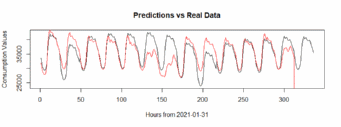

IE 360
Statistical Forecasting and Time Series
Electricity Consumption Forecasting
Project Report
Ecem Tuana Gençer
2016402012
Brusk Serhat Solgun
2018402162
Ömer Yiğit Yıldırım
2016402036
TABLE OF CONTENTS
Introduction
Problem Definition
Summary of Proposed Approach
Descriptive Analysis of the Given Data
Related Literature
Approach
Results
Code
Problem Definition
Statistical forecasting is indispensable for electricity consumption. The distributor must forecast the consumption values at an hourly level to prevent shortage or surplus of electricity. Shortages may result in blackouts and surplus of electricity is basically a loss.
The main task of this project selecting an approach to forecast the next day’s hourly consumption values for Turkish electricity market. Past hourly consumption data and temperature info is given in order to create a model with the chosen approach. This project continued for 14 days starting from the first of February, generating a 24 hour forecast every morning just after updating the recent consumption values from the day before.
Summary of Proposed Approach
The approach for this model contains two phases one for the daily level consumption and the other one distributes the mean consumption level that was found in the first step to an hourly level. The first step is an ARIMA model that takes past consumption values and mean temperature values of 7 different locations.
The output of the first step is the forecast of the total electricity consumption for the next day which will be used as an input for the second step. This step forecasts the differences of the hourly consumption values from the mean consumption value. The second step does not take temperature values as a regressor as their information is contained in the mean consumption value.
Descriptive Analysis of the Given Data
The data given includes consumption values at an hourly level and mean temperature values for 7 locations. Apparently, these values are correlated as the temperature values are used as a regressor to explain the consumption rates. Seasonality at different levels is also visible for both of these values: Month and year information can be used to explain the seasonality for temperature values, basically some months are hotter than others. On the other hand, days of the week are a very significant information for seasonality of the consumption values, and also hours of the day are distributed with seasonality which allowed us to make a daily forecast than distribute it to an hourly level.
Related Literature
While examining and evaluating various models, Introduction to Time Series Analysis and Forecasting, by Montgomery, Jennings, and Kulahci has been a guide throughout the process. Whenever we were unsure about the statistics behind, we referred to the textbook which is available online. DataCamp courses assigned to students in the IE360 course were studied: Understanding and Interpreting Data. Plotting the data, training and test data concepts, exponential smoothing, ARIMA models and other advanced methods was studied to shape the project model better.
Approach
As mentioned above our approach to this problem consists of two main steps the first one is an ARIMA model which takes 7 AR values in order to account for the autocorrelation between 7 different lags of the consumption variable, 2 moving averages and mean temperature values from 7 different locations. ARIMA (Auto Regressive Integrated Moving Average) is a class of models that is utilized to make forecasts from a time series data based on the past values, which means it describes the autocorrelations that exist in the data. ARIMA can be used to build a model for a time series that is non-seasonal, exhibits a certain pattern and is not a random white noise.
The second step only takes the organized train consumption value as a regressor and predicts how far the consumption value for each hour will deviate from the mean for that day, the value of which is then used to determine the prediction for that hour by adding the aforementioned daily prediction divided by 24 .
Results
The plot above shows our models predictions(black) versus real consumption values(red). Note that the predictions are made using our latest model and using the data which was available to us at each submission. After discovering our first models using auto.arima() for daily mean predictions could be improved with an error minimizing approach; on later dates we have manually devised an arima model aiming to minimize error while checking different orders and combinations of ar and ma terms.
Conclusion and Future Work
Although it can be said that our devised model performed adequately on average, improvements can still be made. We have noticed that our model failed to capture certain seasonal effects and as a result, was less accurate when said effects were at play. Our model performed poorer than expected on weekends and night hours. We believe that if we account for these effects better; a more realistic model could be devised which would lead to better predictions.
Code
https://github.com/BU-IE-360/fall20-BSerhat/tree/gh-pages/files/Project